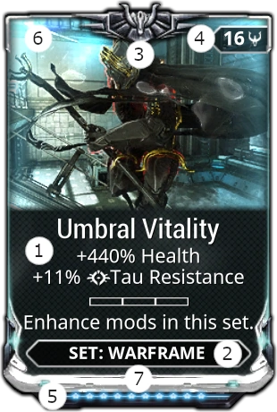
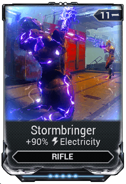
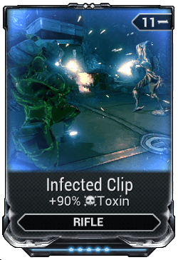
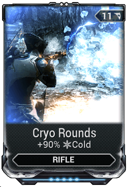
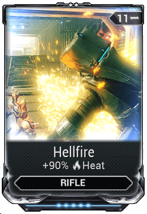

Tutorial
Basics
Choose beginner warframe
- Excalibur
- Mag
- Volt
Weapons
 Melee => Higher combo more damage, especialy on heavy
attack
Melee => Higher combo more damage, especialy on heavy
attack
 Ranged => Slain Enemies and containers
drop ammo
Ranged => Slain Enemies and containers
drop ammo
 Energy => slain Enemies drop energy
Energy => slain Enemies drop energy
- Recommended mods (reduce energy cost) :
- Streamline (mod)
- Fleeting Expertise (mod)
Movement
Bullet jump => (crouch + jump) or (slide + jump) => Fast forward jump
Aim glide => (while in the air + aim) => slower time and glide in the air, increased jumo distance with glide
Mods Tutorial
Mods explained

1 Name and Effects
2 Item Compatibility, Warframe, Rifle, Shotgun
3 Special Indicator, like Auro, Stance, Exilus, Riven
4 Drain and Polarity symbol, how much capacity is used and if symbol is the same less is used
5 Rank, from 0 to max, cost endo to level up and capacity costs usualy increases on higher rank
6 Stack/Quantity, number of the same rank and same mod you own
7 Rarity, color of the mod
Mods can be upgraded by: selecting "fusion" in the mods menu and then paying the needed endo and credits
Click for more infoWays to increase Capacity
You can increase your mod capacity by leveling the item, installing an Orokin Catalyst or Reactor in the "Actions" tab, or by installing Forma to add additional polarities.
Orokin Catalyst and Reactors may be purchased from Nora Night in the Nightwave menu, on the market for 20 platinum and mission like sorties
Forma is a potential reward from opening Void Relics—a system you unlock upon completing the Earth -> Mars Junction.
Warframe
First survivability then ability focus and then focus on two of the following: Ability Strength, Duration, Range, and Efficiency
Recommended:
First mods like Redirection (mod) (warframe) or Vitality (mod) (warframe)
Then mods with Ability Efficiency, like Streamline (mod) (warframe) and Fleeting Expertise (mod)
(warframe)
And either Ability Strength or Range
Weapons
Start with base damage => multishot => combined elements => status change or critical effects
Most Primary wepons builds use: Serration, Split Chamber, Infected Clip, and Cryo Rounds (this creates viral damage)
Elemtal Mods explained and recommended
Possible combinations
When add a mod to a piece of equipment, it starts looking at the top left and goes towards
the top right then one row lower from top left to top right. To decide the order of the
mods. You need to remember this because it will decide when en what is combined. (or you
just check the weapons stats)
The first placement location of lets say heat damage is
used when you use another heat damage mod on this equipment. If you put +90% damage heat in
slot 1 then another +xx% damage heat in slot 10 is counted as added damage in slot 1
The basic elements are: Cold, Electricity, Heat, and Toxin.
- The combinations are:
- Blast = Cold + Heat
- Corrosive = Electricity + Toxin
- Gas = Heat + Toxin
- Magnetic = Cold + Electricity
- Radiation = Electricity + Heat
- Viral = Cold + Toxin
Recommended Combinations
Corrosive (Electricity + Toxin) => Strong against armor, weak against shield => Steel Path enemies, mainly enemies with ferrite armor (Grineer)


Viral (Cold + Toxin) + Heat => just about everithing else (except shield)
 
(optional) Magnetic (Cold + Electricity) increase damage to shields, Toxin completely ignores normal shields (only non-bosses)